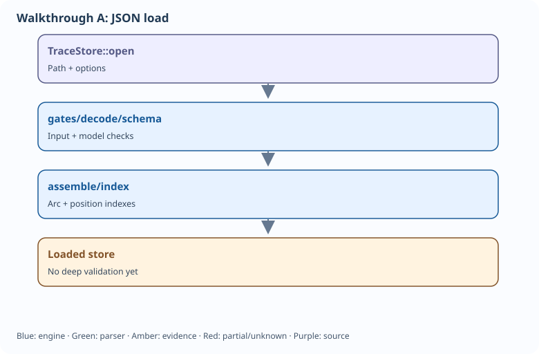
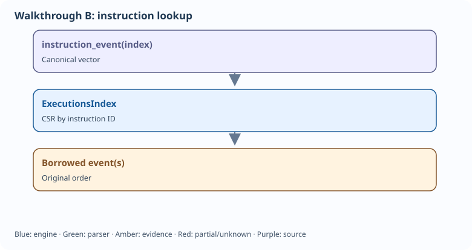
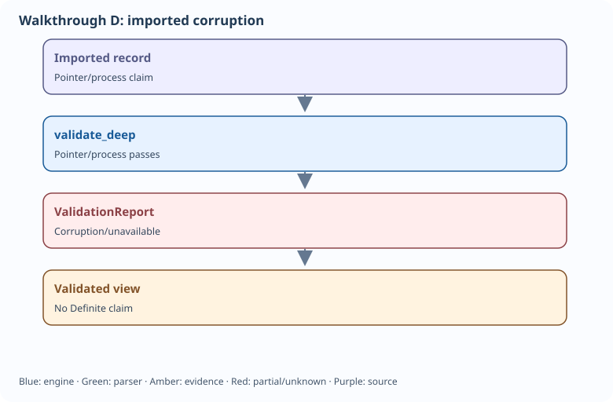
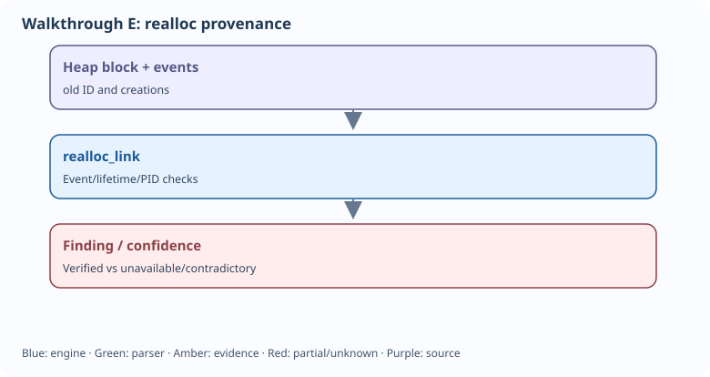
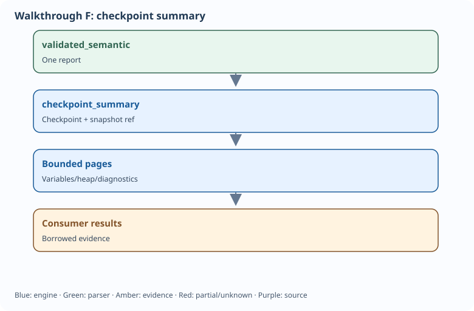
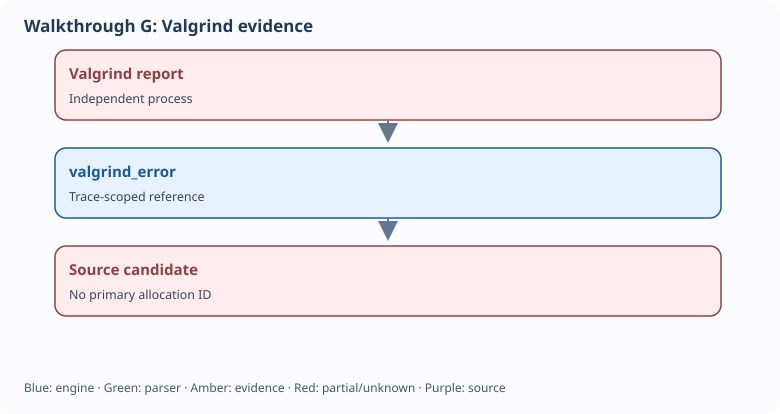
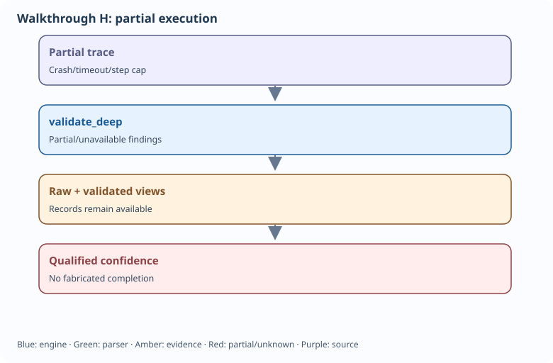

57 · Parser cross-file walkthroughs #
Key terms #
| Term | Plain meaning |
|---|---|
| Entry point | The public function a caller uses first, such as TraceStore::open or validated_semantic(). |
| Intermediate record | An existing trace value or index position examined along the way; not a reconstructed missing observation. |
>
The big picture #
These are source-guided subsystem sequences, not DOC-4 end-to-end execution stories. They follow real functions and name the data at each boundary. Unless a section explicitly cites a checked-in fixture or a fresh run, the sequence is illustrative. No walkthrough changes the trace or invents a missing relationship.
A. Loading a JSON trace #
Entry: TraceStore::open(path, options).
Call path: open → read_trace_bytes → load_trace_document → gates → json::decode_document → validate_schema_version → assemble → TraceIndexes::build (src/trace_parser/mod.rs:240-258,973-995; src/trace_parser/json.rs:19-46).
Input: a schema-2 JSON file, or bytes/reader. Intermediate: UTF-8 &str, deserialized DebugSessionTrace, index builders over borrowed vectors. Output: TraceStore { trace: Arc, indexes: Arc, source }.
Branches: empty/non-UTF-8 fails before decode; oversized input fails at the byte gate; journal-shaped input fails reconstruction; schema 1/3 fails the schema gate. Errors: EmptyInput, InvalidEncoding, LimitExceeded, MalformedJson, UnsupportedSchemaVersion, JournalReconstructionUnsupported.
Sequence:
open -> read_trace_bytes -> load_trace_document -> gates
-> json::decode_document -> schema gate
-> assemble -> TraceIndexes::build -> TraceStoreWhy: loading is intentionally permissive about recorded partiality but strict about input identity. It does not run deep validation.
A diagram #


B. Resolving an instruction event #
Entry: TraceStore::instruction_event(index) or instruction_execution_positions(id).
Call path: direct vector get for an event (src/trace_parser/mod.rs:448-458); for a static instruction, ExecutionsIndex::positions_of → CSR slice → instruction_events[position] (:744-756; src/trace_parser/indexes.rs:313-326).
Input: a retained event index or a disassembly ID. Intermediate: CSR offsets/positions. Output: &InstructionEvent or a borrowed event iterator.
Branches: an out-of-range event index is OutOfRange; an invalid disassembly ID is InvalidReference; a missing source context is simply not indexed. Why: a static instruction can execute many times; the CSR preserves every event position in ascending order.
B diagram #


C. Resolving a variable #
Entry: ValidatedSemanticView::variable(&EvidenceRef).
Call path: variable → resolve_evidence → owner check → resolve_location → type_entry/dwarf_declaration/source_declaration → VariableEvidence (src/trace_parser/semantic.rs:72-129).
Input: a snapshot-variable, global or caller-variable reference. Intermediate: borrowed VariableInfo, optional static metadata. Output: value/type/declaration/source confidences, memory and pointer views.
Branches: wrong evidence category is Unavailable; missing static metadata is Unavailable; a valid debugger value is Definite as an observation; pointer status controls candidate/ambiguous/unavailable. Why: static links are optional, while the recorded value is primary evidence at that stop.
C diagram #

D. Validating imported corruption #
Entry: TraceStore::validate_deep().
Call path: validation::validate_deep → validate_snapshots → validate_pointer_reference; validate_heap → validate_heap_process_coverage (src/trace_parser/validation.rs:243-267,1306-1415,1839-1930).
Input: a forged heap target with an allocation ID but no provenance status, or a process annotation claiming all children observed. Intermediate: identity map, recorded history, finding builder. Output: ValidationReport with unavailable/corruption findings.
Branches: missing status → POINTER_HEAP_PROVENANCE_UNRECORDED; definite claim from address-only → contradictory; unsupported child claim → HEAP_PROCESS_COVERAGE_UNSUPPORTED. Why: an address or a complete observed-PID flag cannot certify a process tree.
D diagram #


E. Realloc provenance: valid versus forged #
Entry: validate_heap and TP-6 heap.
Call path: validate_heap → realloc_link → Verified/Ambiguous/Unavailable/Contradictory; TP-6 heap uses the same helper and maps it to confidence (src/trace_parser/validation.rs:1485-1566,1778-1795; src/trace_parser/semantic.rs:264-285).
Input: successor block, current/previous lifetimes, creation event iterators. Intermediate: match counts, PID/sequence checks, terminal-zero filter. Output: validation finding and/or heap confidence.
Branches: missing predecessor/creation → unavailable; multiple matches → ambiguous; contradictory type/PID/sequence/cycle → corruption; one compatible chain → verified. Why: the audit defect was treating an existing ID as proof; the repair requires event and lifetime corroboration.
E diagram #


F. Building a consumer checkpoint summary #
Entry: TraceStore::open → validated_semantic() → checkpoint_summary(index).
Call path: checkpoint_summary → checkpoint → evidence_ref(Snapshot); then variables_page, heap_events_page, valgrind_errors_page (src/trace_parser/consumer.rs:57-113,239-246).
Input: one retained snapshot and a validated view. Intermediate: checkpoint evidence, snapshot reference, page ranges. Output: borrowed variables, heap events and independent diagnostics with confidences.
Branches: invalid snapshot → OutOfRange; foreign allocation reference → ForeignTrace; page >128 → LimitExceeded; missing optional report → Unavailable. Why: composition reuses one validation pass and never clones the checkpoint.
F diagram #


G. Independent Valgrind evidence #
Entry: ValidatedSemanticView::valgrind_error(index).
Call path: evidence_ref(ValgrindError(index)) → resolve_evidence → ValgrindEvidence (src/trace_parser/semantic.rs:357-374).
Input: an independent Valgrind report recorded by the engine. Intermediate: a trace-scoped error reference. Output: source-site candidates and primary_allocation_id: None.
Branches: missing report → Unavailable; candidates → Candidate; no candidates → Unavailable. Why: Valgrind ran in a separate process. A matching source line is not a primary-run allocation identity.
G diagram #


H. Partial execution #
Entry: TraceStore::open on a crash, timeout or step-limited trace.
Call path: load/index → validate_deep → validated_semantic → raw views and page queries (src/trace_parser/mod.rs:240-408; src/trace_parser/semantic.rs:36-44).
Input: a trace with execution_status such as Crashed, Timeout or StepLimitReached. Intermediate: report findings for partial coverage/unavailable evidence. Output: original records remain available; confidence is qualified; gaps and coverage stay explicit.
Branches: structural corruption only for broken invariants; partial coverage for caps/interruption; unavailable for absent optional evidence. Why: a partial trace is valid data, not a failed ingestion.
H diagram #


Fixture and verification note #
tests/fixtures/stage1/realloc_move.json and tests/fixtures/journal/*.jsonl are checked-in inputs used by parser tests. The Stage 1 audit's 383-test/16-trace corpus is historical evidence, not a DOC-3 rerun. The walkthroughs above are source-guided; DOC-4 will add fresh end-to-end execution stories.